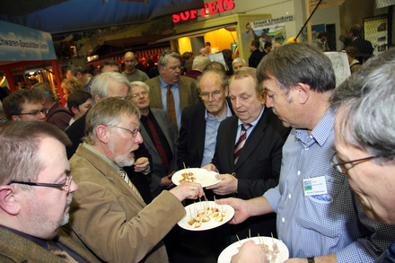

wurde im Rahmen der Grünen Woche in Berlin am 24.01.13 der Öffentlichkeit präsentiert,
gegen den Protest einiger Mitglieder der Perspektivkommission.
[Anhang: <!-- ia0 -->189283193951014d07a8da6.jpg<!-- ia0 -->]
Minister Dr. Backhaus mit der Perspektivkommission Land- & Ernährungswirtschaft MV
am 24.01.2013 beim Rundgang durch die Länderhalle MV
An dieser Sitzung nehmen auch die Mitglieder des Landtages von Mecklenburg-Vorpommern des Ausschusses
für Landwirtschaft, Umwelt und Verbraucherschutz teil.
Das von 11 auf 21 Seiten angeschwollene "Mensch und Land 2.2" ist aber bisher nur schwer zu finden.
Die Einladung von Sekretär MLE, Eindrücke und Verbesserungsvorschläge zu posten unterblieb bisher.
Doch es lohnt, die Entwicklung von "Mensch und Land" zu beobachten.
Die Ergebnispapiere der Arbeitsgruppensitzungen sind nicht nur gewachsen, sondern haben sich dabei gewandelt.
Die durch die wissenschaftliche Begleitung erarbeiteten, interpretierten strategischen Aussagen aller
Arbeitsgruppenergebnisse der jeweiligen Themenfeldern haben sich aber seltsamerweise keineswegs verändert.
So ist z.B. eine im Entwurf 2.1 benannte Erwartungshaltung der Perspektivkommission verschwunden:
"Der Masterplan Mensch und Land soll ein Beitrag zur Strategie „Gesundheitsland Mecklenburg-Vorpommern“ werden.
Seine Leitlinien dienen der Formulierung von konkreten politischen Programmen."
Vor allem aber verschwand auch diese benannte Erwartung:
"Der Masterplan soll zu einer Versachlichung der öffentlichen Diskussion beitragen.
Wichtig ist es, alle Fragen aufzugreifen, die in der Bevölkerung eine große Bedeutung haben und sie kritisch zu beleuchten."
Statt dessen verbreitet "das gut funktionierende Agrarmarketing" ein "Bewusstsein um die Besonderheiten des Landes"
und "sorgt so dafür, dass der Wahlspruch des Landes „MV - tut gut“ deutschlandweit bekannt ist":
"Die Landwirtschaft ist krisenfest, weil sie in der Regel verantwortungsvoll und nachhaltig betrieben wird."
Sie produziert "für eine bereits bestehende leistungsfähige Ernährungsindustrie...
und legt den Grundstock für eine leistungsfähige Tourismusindustrie.
Dieser Sektor wird unter anderem durch die gute regionale Küche gestützt."
Die "Umwelt- und Tierschützer" haben also weiterhin allen Grund, die Arbeitsweise der Perspektivkommission zu hinterfragen.
Sie meckern nicht, sondern bieten fundierte Alternativen zur praktizierten Agrarindustrie.
Klare Aussagen dazu in der Tagungsbroschüre "Agrarindustrie oder Garten der Metropolen", die neun Beiträge von Experten aus Wirtschaft, Wissenschaft und Praxis zur Zukunft des ländlichen Raumes enthält. Die Broschüre ist in Internet abrufbar: <!-- m --><a class="postlink" href="http://www.bund-mv.de/">http://www.bund-mv.de/</a><!-- m -->
und kann in der fünfzigseitigen Druckversion beim BUND in Schwerin bestellt werden.
